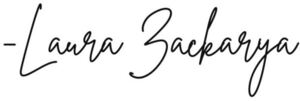

Trade Mark Journal No.2025/044 31 October 2025
WO0000001881605 (3)
Office of origin: Kazakhstan
Date of International Registration:5 September 2025
Date of designation in the UK:
5 September 2025

- Class 3
- Abrasives; amber [perfume]; descaling preparations for household purposes; antiperspirants [toiletries]; antistatic preparations for household purposes; air fragrancing preparations; cake flavourings [essential oils]; flavourings for beverages [essential oils]; food flavourings [essential oils]; aromatics [essential oils]; canned pressurized air for cleaning and dusting purposes; balms, other than for medical purposes; basma [cosmetic dye]; lip glosses; nail glitter; body glitter; polishing stones; abrasive paper; emery paper; polishing paper; petroleum jelly for cosmetic purposes; cobblers' wax; cotton wool for cosmetic purposes; cotton wool impregnated with make-up removing preparations; drying agents for dishwashing machines; adhesives for cosmetic purposes; scented water; Javelle water; lavender water; micellar water; toilet water; shoemakers' wax; polishing wax; wax for parquet floors; floor wax; non-slipping wax for floors; depilatory wax; moustache wax; shoe wax; tailors' wax; heliotropine; massage gels, other than for medical purposes; dental bleaching gels; geraniol; starch glaze for laundry purposes; make-up; deodorants for pets; depilatory preparations; air fragrance reed diffusers; scented wood; perfumes; non-slipping liquids for floors; windscreen cleaning liquids; greases for cosmetic purposes; volcanic ash for cleaning; perfumery; decorative transfers for cosmetic purposes; ionone [perfumery]; shaving stones [astringents]; alum stones [astringents]; smoothing stones; eyebrow pencils; teeth whitening pens; cosmetic pencils; carbides of metal [abrasives]; silicon carbide [abrasive]; adhesives for affixing false eyelashes; adhesives for affixing false hair; hair conditioners; quillaia bark for washing; corundum [abrasive]; beard dyes; colorants for toilet purposes; cosmetic dyes; body paint for cosmetic purposes; starch for laundry purposes; creams for leather; skin whitening creams; polishing creams; cosmetic creams; essential oil-based creams for aromatherapy use; shoe cream; polishing rouge; incense; hair spray; nail varnish; liquid latex body paint for cosmetic purposes; hair lotions; lotions for cosmetic purposes; after-shave lotions; beauty masks; sheet masks for cosmetic purposes; disposable steam-heated masks, not for medical purposes; oils for perfumes and scents; oils for cosmetic purposes; oils for toilet purposes; essential oils; essential oils for aromatherapy use; essential oils of cedarwood; essential oils of lemon; essential oils of citron; oils for cleaning purposes; bergamot oil; gaultheria oil; jasmine oil; lavender oil; rose oil; oil of turpentine for degreasing; whiting; cleaning chalk; almond milk for cosmetic purposes; cleansing milk for toilet purposes; musk [perfumery]; soap; deodorant soap; shaving soap; soap for brightening textile; cakes of toilet soap; antiperspirant soap; soap for foot perspiration; almond soap; mint for perfumery; emery; gel eye patches for cosmetic purposes; nail art stickers; double eyelid tapes; false nails; eau de Cologne; make-up palettes containing cosmetics; joss sticks; pastes for razor strops; toothpaste; pumice stone; lipstick cases; hydrogen peroxide for cosmetic purposes; dressings for nail reconstruction; shoe polish; breath freshening strips; teeth whitening strips; sandcloth; glass cloth [abrasive cloth]; lipsticks; pomades for cosmetic purposes; shaving preparations; cosmetic preparations for baths; bath preparations, not for medical purposes; hair straightening preparations; hair waving preparations; laundry soaking preparations; grinding preparations; smoothing preparations [starching]; colour-removing preparations; leather bleaching preparations; polishing preparations; denture polishes; mouthwashes, not for medical purposes; cosmetic preparations for slimming purposes; preparations to make the leaves of plants shiny; eye-washes, not for medical purposes; fabric softeners for laundry use; douching preparations for personal sanitary or deodorant purposes [toiletries]; dry-cleaning preparations; paint stripping preparations; lacquer-removing preparations; make-up removing preparations; floor wax removers [scouring preparations]; varnish-removing preparations; rust removing preparations; nail care preparations; cleaning preparations; preparations for cleaning dentures; wallpaper cleaning preparations; preparations for unblocking drain pipes; chemical cleaning preparations for household purposes; collagen preparations for cosmetic purposes; bleaching preparations [decolorants] for household purposes; sunscreen preparations; aloe vera preparations for cosmetic purposes; colour-brightening chemicals for household purposes [laundry]; breath freshening preparations for personal hygiene; shining preparations [polish]; make-up powder; diamantine [abrasive]; stain removers; wax melts [fragrancing preparations]; nail varnish removers; vaginal washes for personal sanitary or deodorant purposes; scouring solutions; false eyelashes; antistatic dryer sheets; baby wipes impregnated with cleaning preparations; colour run prevention laundry sheets; tissues impregnated with cosmetic lotions; tissues impregnated with make-up removing preparations; safrol; sachets for perfuming linen; massage candles for cosmetic purposes; laundry blueing; turpentine for degreasing; potpourris [fragrances]; bleaching soda; washing soda, for cleaning; bath salts, not for medical purposes; bleaching salts; air fragrancing preparations; leather preservatives [polishes]; ammonia [volatile alkali] [detergent]; breath freshening sprays; cooling sprays for cosmetic purposes; astringents for cosmetic purposes; eyebrow cosmetics; make-up preparations; sun-tanning preparations [cosmetics]; hair dyes; neutralizers for permanent waving; laundry glaze; cosmetic preparations for eyelashes; laundry preparations; cosmetic preparations for skin care; dentifrices; cosmetics; cosmetics for children; cosmetics for animals; detergents, other than for use in manufacturing operations and for medical purposes; laundry bleach; toiletry preparations; skin hydrators for cosmetic purposes; phytocosmetic preparations; serums for cosmetic purposes; detergent tablets for coffee machines; talcum powder, for toilet use; terpenes [essential oils]; emery cloth; toners for cosmetic purposes; tripoli stone for polishing; cloths impregnated with a detergent for cleaning; mascara; henna [cosmetic dye]; bath tea for cosmetic purposes; shampoos; shampoos for animals [non-medicated grooming preparations]; dry shampoos; laundry balls filled with laundry detergents; sandpaper; cosmetic stamps, filled; soda lye; herbal extracts for cosmetic purposes; extracts of flowers [perfumes]; ethereal essences; badian essence; mint essence [essential oil]; polish for furniture and flooring; deodorants for human beings or for animals; almond oil for cosmetic purposes; cleansers for intimate personal hygiene purposes, non-medicated; degreasing preparations, other than for use in manufacturing processes; bleaching preparations [decolorants] for cosmetic purposes; cotton swabs for cosmetic purposes; shampoos for pets [non-medicated grooming preparations].
Galiyeva Laura Zakaryevna
Representative: Alzhan Ayazhanym Meiramkyzy, 22-4 Street, Building 3, Z05T8A9 Astana City, KAZAKHSTAN